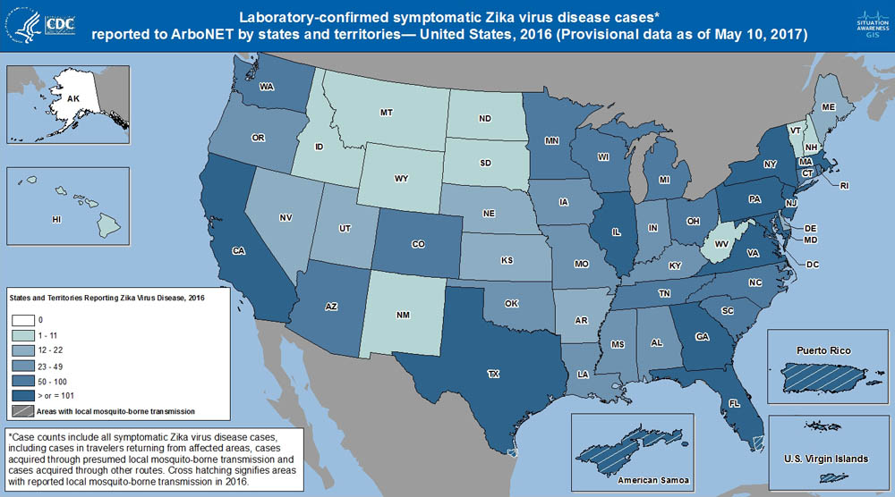

INTRODUCTION
During a disease outbreak, people find themselves turning to two primary sources of information: public health organizations and news organizations. Generally speaking, news organizations report based on the information provided by public health organizations, but how they do so — the frequency with which they report, the type of reporting that takes place, and even the amount of detail in that reporting — can vary based on the organization and the disease.
As conversation on the outbreak spreads, audiences search for more information about the outbreak in question, looking for their own information and answers.
PROJECT OVERVIEW
This project examines whether or not there is a disparity between what is being reported during a disease outbreak (in this case, public health notifications of an outbreak) and what audiences are searching for (U.S. audience Google search data).
Having done so, we found that U.S. audiences overwhelmingly search for the diseases that they aren’t necessarily at most risk for in a given time period. We conducted our research with a focus on Ebola and Zika, given that both are disease outbreaks that have: (1) taken place in the last few years, (2) originated abroad, but came to the United States in some capacity, and (3) generated a significant amount of mainstream media coverage.
We built this series of visualizations to examine the disparity between audience interpretations of risk for a disease and the disease’s actual prevalence.
For the purposes of this series of visualizations, we used data from the CDC to determine the actual risk and prevalence of Ebola and Zika. We used Google Trends data to determine how often U.S. audiences searched for either Ebola or Zika during the relevant outbreak period; this data was used to interpret whether or not audiences were concerned about the outbreak in question.
CONTEXT
Let’s start by talking about how prevalent Ebola and Zika actually were/are in the United States.
The Ebola outbreak took place in 2014, and was based in West Africa. According to the Centers for Disease Control and Prevention (CDC), only four instances of Ebola were found in the United States — between September and October 2014. Of those four instances, three took place in Texas, following Thomas Duncan’s return from West Africa and subsequent diagnosis with the disease. The other instance took place in New York, following the return of another medical aid worker, Dr. Craig Spencer, from West Africa.
The Zika outbreak began in 2015, first gaining traction in South America, before entering the United States. Zika is a mosquito-borne disease that is now found most often in California, Florida, New York, and Texas. Between 2015 and December 2017, over 5,000 symptomatic disease cases have been reported in the United States.
Consequently, if one compares the actual risk of a U.S. resident contracting Ebola with the actual risk of contracting Zika, it becomes apparent that residents have a greater likelihood of contracting Zika.

2016 Zika Case Counts: Official CDC Visualization (Source)
CDC Notices: Factual Benchmarks
This conclusion is further supported by an analysis of the CDC’s own notices regarding both disease outbreaks. This line graph highlights how many notices the CDC released about Ebola and Zika between 2014 and the end of Nov. 2017, aggregated on a monthly basis. There are far fewer Ebola notices than Zika notices.
Google Searches of Zika and Ebola over Time
The following scatter plot highlights how curious U.S. audiences were about both outbreaks. This plot is comprised of Google Trends data for “ebola” and “zika” as search terms.
Audience Interest Compared to "Normal"
In the following section, we examine searches of both Ebola and Zika compared to searches for the flu in the United States. We’re considering the flu as a benchmark of sorts, given that it happens in the U.S. yearly, is widely acknowledged, and is subject to a concentrated media effort (at least on the part of the CDC).
Compared to the benchmark, then, how did audiences view Ebola and Zika in the respective years of those outbreaks?
Zika
Ebola
Another way to think about this is to think about Ebola, Zika, and the flu: Even though U.S. audiences were more likely to contract Zika than Ebola, they prioritized searching for the flu over searching for Zika. The opposite occurred in regards to searches for Ebola and the flu.
Conclusions
Together, these visualizations show us that U.S. audiences consider disease along lines that don’t necessarily correlate with their actual risk for contracting a given disease.
Given these findings, we’re interested in looking at how media coverage might relate to audience searches of disease outbreaks, and how this might manifest itself along regional lines. Going forward, we’re interested in exploring this question in more detail through an exploration of the frequency with with regional news organizations mentioned Ebola and Zika during each respective disease outbreak.